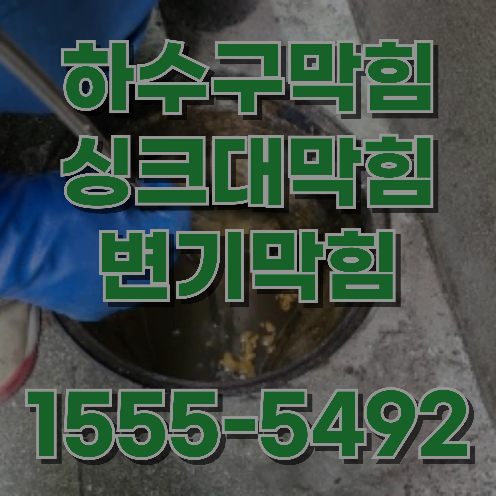

24시간 운영중
월 ~ 일


잠원동 하수구막힘 뚫는 곳 고치는 업체 고압세척 비용배수관 스네이크는 긴 철사 모양의 도구로, 배수구 깊숙이 들어가 이물질을 제거하는 데 효과적입니다. 스네이크를 사용하여 깊은 곳에 쌓인 이물질을 제거하면 하수구 막힘을 해결할 수 있습니다. 배수관 스네이크를 사용할 때는 너무 많은 힘을 가하지 않도록 주의해야 하며, 배수관을 손상시킬 수 있기 때문에 조심스럽게 사용해야 합니다. 화학 세제를 사용하는 것도 한 가지 방법입니다. 시중에는 하수구 막힘을 해결할 수 있는 화학 제품들이 여러 가지 있습니다. 이러한 제품들은 하수구에 부어 이물질을 분해하거나 녹여서 막힘을 해결하는 역할을 합니다. 하지만 화학 세제는 장기적으로 사용할 경우 배관에 부담을 줄 수 있기 때문에, 자주 사용하지 않는 것이 좋습니다. 화학 제품을 사용할 때는 반드시 제품 설명서를 읽고, 안전 장비를 착용한 후 사용하는 것이 중요합니다. 화학 제품을 사용한 후에는 물을 충분히 내려야 하며, 사용 후 배관이 손상되지 않도록 주의해야 합니다.
잠원동 하수구막힘 뚫는 곳 고치는 업체 고압세척 비용하수구 막힘을 예방하는 가장 중요한 방법은 이물질이 하수구로 들어가지 않도록 관리하는 것입니다. 주방에서는 음식물 쓰레기나 기름이 하수구로 배출되지 않도록 주의해야 합니다. 기름은 배수관 안에서 굳어져 막힘을 유발할 수 있으므로, 음식물 찌꺼기나 기름을 하수구에 버리지 않도록 해야 합니다. 기름을 모아서 따로 처리하거나, 음식물 쓰레기를 별도로 배출하는 방법을 사용하면 하수구 막힘을 예방할 수 있습니다. 욕실에서는 머리카락이 하수구에 들어가지 않도록 주의해야 합니다. 머리카락은 배수구에 쉽게 쌓여 막힘을 일으킬 수 있기 때문에, 배수구에 머리카락 거름망을 설치하거나, 사용 후 머리카락을 제거하는 습관을 들이는 것이 좋습니다. 또한, 화장지나 이물질을 하수구에 버리지 않도록 주의해야 합니다. 과도하게 많은 화장지를 사용할 경우 배수구가 막히기 쉬우므로, 적당량만 사용하는 것이 중요합니다. 정기적으로 하수구를 청소하고 점검하는 것도 중요한 예방 방법입니다. 배수구에 이물질이 쌓이기 전에 청소를 하면 하수구 막힘을 예방할 수 있습니다. 주방이나 욕실의 하수구는 주기적으로 청소하고, 배수관에 이물질이 쌓이지 않도록 점검하는 것이 필요합니다. 이를 통해 하수구의 원활한 흐름을 유지할 수 있습니다.

잠원동 하수구막힘 뚫는 곳 고치는 업체 고압세척 비용하수구 막힘은 단순히 물이 내려가지 않는 불편함을 초래하는 것에 그치지 않고, 가정 환경에 다양한 부정적인 영향을 미칩니다. 가장 흔한 문제는 악취입니다. 배관 내부에 쌓인 찌꺼기가 부패하면서 불쾌한 냄새를 유발하게 됩니다. 이러한 냄새는 공기 중으로 퍼져 집안 전체에 영향을 미칠 수 있습니다. 또한, 하수구가 막히면 물이 역류할 가능성도 있습니다. 주방이나 욕실에서 물이 넘치면 주변이 오염되고, 심한 경우 바닥재나 가구가 손상될 수 있습니다. 이는 추가적인 비용과 시간을 들여 복구 작업을 해야 하는 상황을 초래합니다. 특히, 하수구 막힘이 반복적으로 발생하면 배관 시스템에 무리가 가해져 수명이 단축될 수 있습니다.

잠원동 하수구막힘 뚫는 곳 고치는 업체 고압세척 비용하수구 관리는 단순히 배관 문제를 해결하는 것을 넘어 가정의 위생과 경제적인 손실을 줄이는 데 매우 중요한 역할을 합니다. 작은 문제라도 빠르게 해결하고, 정기적인 예방 조치를 통해 이러한 문제를 미리 방지하는 것이 중요합니다. 잠원동하수구막힘 잠원동 하수구막힘 뚫는 곳 고치는 업체 고압세척 비용


| 문제 | 예방법 | 추가 팁 |
|---|---|---|
| 잠원동변기막힘 | 생리대와 물티슈를 변기에 버리지 마세요. | 화장지를 필요한 만큼만 사용하여 막힘을 방지하세요. |
| 잠원동싱크대막힘 | 기름이나 기름기를 싱크대에 버리지 말고 종이타월로 닦아내세요. | 거름망을 사용하여 음식물 찌꺼기가 배수구로 들어가지 않게 하세요. |
| 잠원동하수구막힘 | 머리카락 필터를 설치하고 사용 후 정기적으로 청소하세요. | 배수구에 뜨거운 물을 한 달에 한 번 부어 비누 찌꺼기를 제거하세요. |